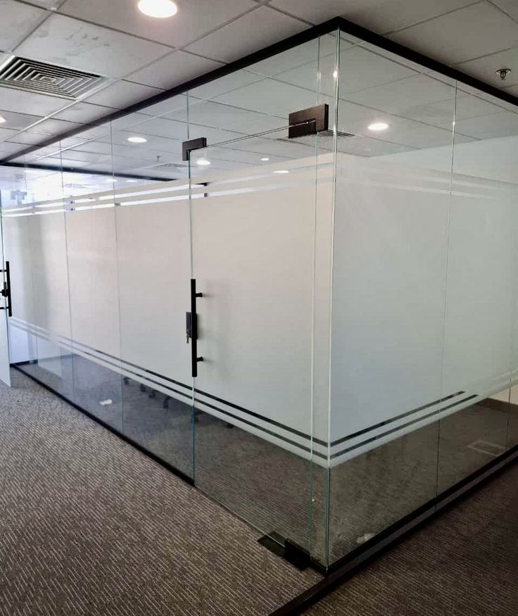

GlassStudio · Builders, Contractors & Commercial Projects
Architectural & Commercial Glass Contractor in Hyderabad
Glass partitions, entrances, shop fronts, balcony railings and shower glass for builders, civil contractors, architects and fit-out companies across Hyderabad.
An architectural glass contractor for architects, builders and project teams
Hyderabad's west corridor, from Financial District and Kokapet to Gachibowli, HITEC City, Kondapur and Tellapur, has a steady pipeline of apartment towers, office floors and retail spaces. Each one needs a glass contractor who can quote from drawings, measure accurately and install to the site schedule.
GlassStudio takes the glass scope for builders, civil and fit-out contractors, architects and facility managers. We quote from BOQs and drawings, take site measurements with our own team, and install in phases that match your construction schedule.
- Quotes from BOQ, tender drawings or specifications
- Site measurement by our own team
- Phase-wise installation, floor by floor or block by block
- Based in Manikonda, close to the west Hyderabad corridor
Glass work for residential projects (apartments & villas)
- Balcony glass railings: toughened or laminated glass railings with spigot or channel fixing.
- Staircase railings: glass railings for villas, clubhouses and common areas.
- Shower glass: shower partitions and cubicles for apartment bathrooms.
- Windows: UPVC and aluminium windows and sliding doors.
- Clubhouse and lobby glass: entrance doors, partitions and mirrors for amenities.
Glass work for commercial projects (offices, retail, hospitality)
- Office glass partitions: full-height partitions, cabins, meeting rooms and aluminium profile systems.
- Glass entrances: frameless toughened glass doors with patch fittings and floor springs.
- Shop fronts: toughened glass storefronts for showrooms, restaurants and retail.
- Washroom glass: glass partitions, mirrors and vanity glass for commercial washrooms.
- Films and frosting: privacy films, manifestation bands and branding on glass.
Areas we cover
Projects across Hyderabad, with most work in Financial District, Kokapet, Narsingi, Gachibowli, HITEC City, Madhapur, Kondapur, Tellapur, Manikonda, Jubilee Hills and Banjara Hills.
Interior designer or architect? See our glass partner page for interior designers and architects.
Frequently asked questions
Do you take glass work for apartment and commercial projects?
Yes. We take glass scopes for apartment towers, villas, offices and retail projects, including balcony railings, shower glass, glass partitions, entrances and shop fronts.
Can you quote from a BOQ or tender drawing?
Yes. Share the BOQ, drawings or specifications on WhatsApp or email and we will send an itemised quotation for the glass scope.
Can installation be done in phases?
Yes. On larger projects installation can be planned floor-by-floor or block-by-block to match the site schedule.
Send your BOQ or drawings
Share the project scope on WhatsApp or email at glassstudiowork@gmail.com for an itemised quotation.